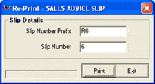

Sales Advice Slip generated earlier can be reprinted using this option. The reprinting of a Sales Advice Slip is required, if it is lost or damaged while printing earlier.
The Re-Print – SALES ADVICE SLIP window is as shown.

Slip Details
Slip Number Prefix: Enter the prefix of the Sales Advice Slip to be reprinted.
Slip Number: Enter the document number of the Sales Advice Slip to be reprinted.